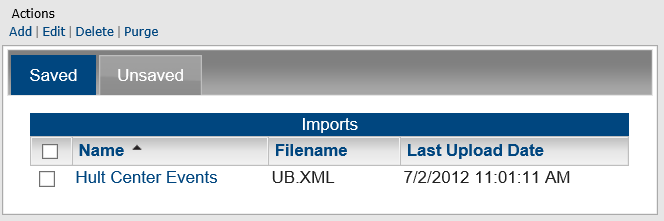
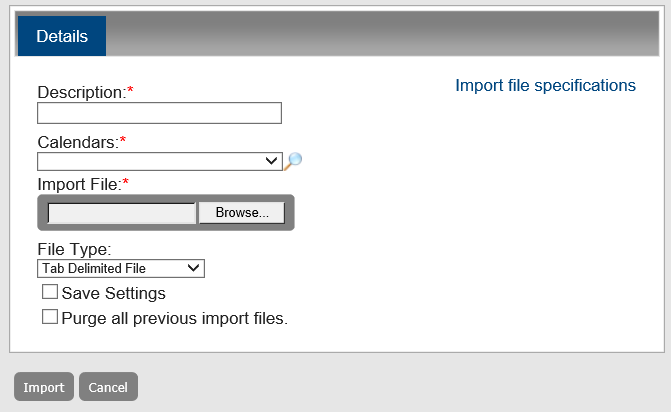
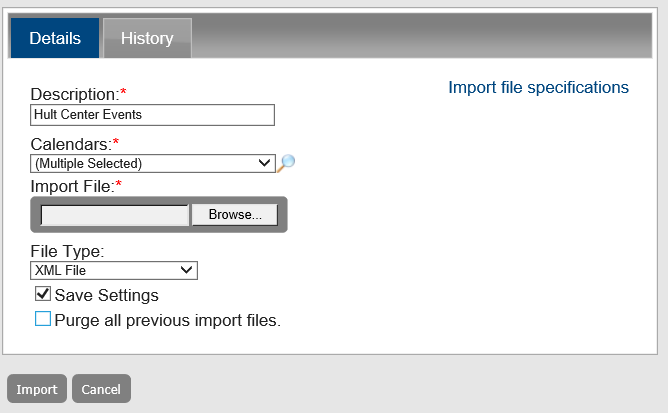
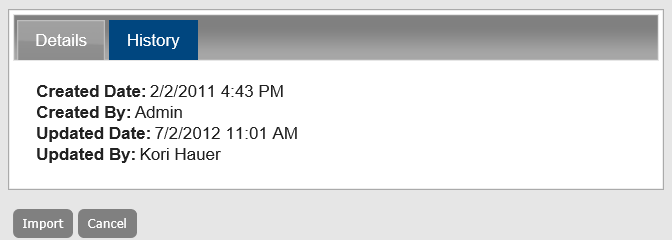

You use the Import Events function to import events into Master Calendar. The file that contains the events can be a tab-delimited file that has been created in another system such as Microsoft Excel or it can be an XML file. You can import a tab-delimited file or an XML file into Master Calendar only if it adheres to file specifications defined for Master Calendar.
To obtain file specifications and view examples of allowed files, click the Import file specifications link on the Details tab of the Imports page.
To access this link, do one of the following:
Click Admin > Event and Special Dates > Import Events, and then click Add.
Select an imported event, and then click Edit.
This topic guides you in importing an event, editing, deleting and purging imported events, and viewing the history for an imported event.
Ensure Master Calendar is connected to the EMS database as a data source and has connectors set up.
From the Admin Panel, navigate to Admin > Events & Special Dates > Import Events. The Imports page opens to the Saved tab, which lists all currently imported files saved in Master Calendar.

Under Actions, click Add. A blank Details tab opens, where you specify the calendar to which you are importing the event and you select the file to import.
Enter the information for the imported file.

Details Tab Fields
|
Field |
Description |
|---|---|
|
Description |
A description of the file or the information that you are importing. |
|
Calendars |
A list of all active calendars to which you have access as Calendar Manager. Click the Lookup icon to open the Calendars dialog box and select the calendars to which you are adding the special date. |
|
Import File |
Click Browse to open the Choose File dialog box to browse to and select the file that is to be imported. |
|
File Type |
Dropdown from which you can select one of two options:
|
|
Save Settings |
Optional. Select this value to save the imported file in Master Calendar. |
|
Purge all previous import file |
Optional. Select this value to purge all previously imported events that were saved in Master Calendar. |
Click Import. If the import is successful, the information for the import is displayed and if:
You selected Save Settings, the import is displayed on the Save tab. An automated email from emssoftware.com is sent to the address that you used to log in to Master Calendar. The email is titled “Master Calendar File Import Process” and the message states that “The file for the import named < > was successfully imported.”
You did not select Save settings, the import is displayed on the Unsaved tab. An automated email from emssoftware.com is sent to the address that you used to log in to Master Calendar. The email is titled “Master Calendar File Import Process” and the message states that “The file for the import named < > was successfully imported.” Otherwise, a message is displayed at the top of the Imports page indicating that the import was not successful and details the problems with the file that prevented the import from being successful. You must correct the problems that are indicated for the file and carry out the import process again.
You can only edit an import file only if you saved it in EMS Master Calendar.
From the Admin Panel, navigate to Admin > Events & Special Dates > Import Events. The Imports page opens to the Saved tab, which lists all currently imported files saved in Master Calendar. You can select any file using the checkboxes on the left and then apply Actions from the Actions menu.
Select the imported event file you want to work with.
Under Actions, click Edit. The Details tab opens, where you edit the information for the import, including its description, the calendars to which you are importing the external events, the file to be used for the import, and the file type. You can also indicate whether you want to save this edited import and whether you want to purge all previously imported files that were saved in Master Calendar.

To view the history for an import file, select the import file for which you are viewing the history.
Under Actions, click Edit. The Details tab opens.
Click the History tab to view the history for the selected import. Click Cancel to return to the Details tab.

To delete an imported event, select the event file from the Saved or Unsaved tab in the Import Events page. To select all import files in a single step, select Description. If you have multiple pages of imports to delete, you must repeat this entire process on each page.
When you delete a saved import file, you are deleting the import file plus all the events that were added to the calendars as a result of the import. When you delete an unsaved import file, you are not truly deleting a file. Instead, you are simply deleting all the events that were added to the calendars as a result of the import.
Under Actions, click Delete. A message prompts you to confirm that you want to delete all the selected imports.
Click OK. A message confirms the deletion.
Click OK. The Active tab or Inactive tab is updated to reflect the deletion of the import file(s).
To purge an imported event, select the file from the Saved tab (you can purge an import file only if you saved the file in Master Calendar). To select all saved import files on the currently opened page for purging in a single step, select Description. If you have multiple pages of saved import files to purge, you must repeat this entire process on each page.
Under Actions, click Purge. A message prompts you to confirm that you want to purge all the selected imports.
Click OK. A message confirms the deletion.
Click OK. The Active tab or Inactive tab is updated to reflect the purge of the import file(s).